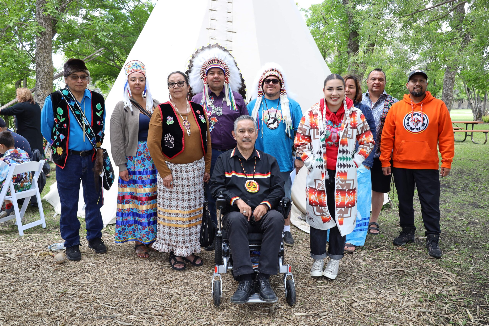

How is treaty 1 now?
The treaty is still in effect and the rights and obligations outlined in the treaty and they are still being upheld by both parties. The treaty is still being honored by the indigenous people and the british crown. The treaty is still being used as a basis for negotiations and discussions between the indigenous people and the british crown, and it is still being used as a basis for the relationship between the two parties.

Why would you care?
We can help by educating ourselves and others about the treaty and the rights and obligations outlined in the treaty. We can also support indigenous organizations and initiatives that are working to uphold the treaty and the rights of indigenous people.
We can also advocate for policies and legislation that support the treaty and the rights of indigenous people. We can also work to build relationships with indigenous people and communities, and we can listen to their voices and perspectives.